Vierte Aufwertung: Am Spieltag
Von 55 Partie-Karten im Feed der letzten vierzehn Tage beginnt heute jede mit demselben Ergebnisband: vier Wappen, der Stand, zwei Namen. Der Entwurf lässt den Kopf dem Anlass folgen und zeigt in jedem Anlass eine Zahl, die auf der Karte bisher fehlte. Gebaut ist er in der echten App mit den echten Partien und ihren Bauteilen, bei 360 px — eingebaut ist davon noch nichts.
Der Kopf folgt dem AnlassSpielfeld, Anzeigetafel, Wippe und Ergebniszeile statt immer desselben Bands. Wo die Grafik die Aussage trägt, schrumpft der Kopf auf eine Zeile.
Neue Zahlen statt neuer WörterRollen, Bilanz in engen Partien, Ergebnisverteilung, Elo-Gefälle, Tabellenbewegung, eigener Bestwert, Elo-Kurve, jede Begegnung — alles gerechnet aus den Partien bis zu dieser.
Farbe sagt etwasGrün und Rot nur für die Richtung, Gold nur für die neue Spitze, alles Übrige Metall [§C25]. Keine neue Farbe.
Eine Runde, eine Karte10 Runden im Fenster: dieselben vier am Tisch, Partie auf Partie. Sie werden eine Karte mit der Tabelle der Runde.
Der Feed als Ganzes
Die ersten Karten Heute und im Entwurf
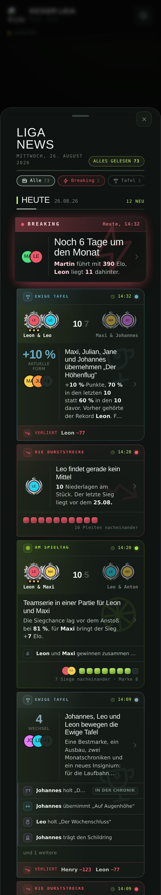
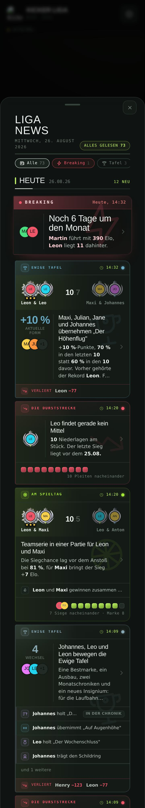
- Dieselben Partien, dieselbe Reihenfolge. Links beginnt jede Karte mit demselben Band, rechts sieht jede Karte nach dem aus, wovon sie erzählt.
Zusammenführen
Die Runde der Vier Eine Karte statt 5
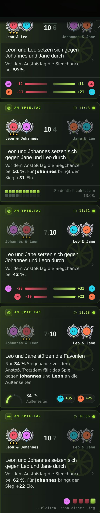
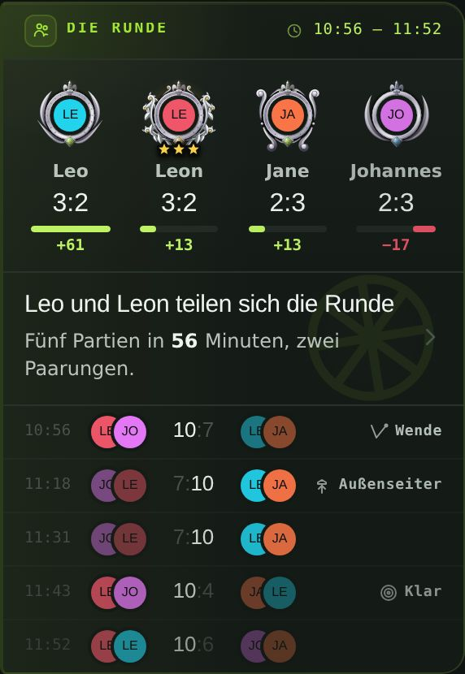
- 182 der 466 Partien der Liga liegen in Runden: dieselben vier am Tisch, keine Stunde zwischen zwei Partien, und in 48 von 57 Runden wechseln die Paarungen. Im Feed standen sie als Karten untereinander, mit denselben vier Wappen in jedem Band.
- Die Runde wird eine Karte: oben die Tabelle der Runde — jeder mit Siegen, Niederlagen und der Elo, die er in der Runde gewonnen oder abgegeben hat —, darunter jede Partie in einer Zeile mit Uhrzeit, Paarung, Stand und ihrem Anlass.
- Die Schlagzeile sagt, wer die Runde gewonnen hat; der Satz, wie lange sie ging und wie oft die Paarung wechselte. Im Blatt stehen die Einzelkarten weiter vollständig.
Je Anlass
Die gewöhnliche Partie Das Spielfeld
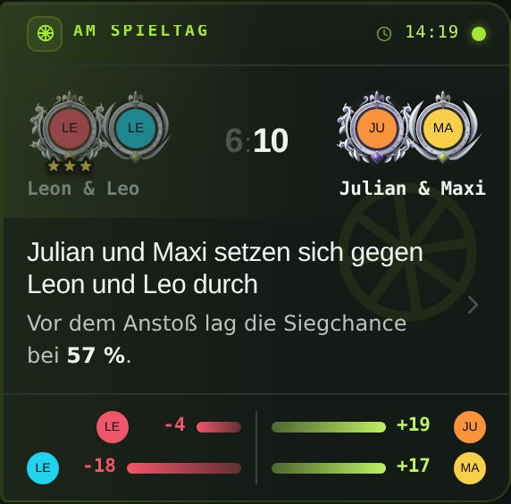
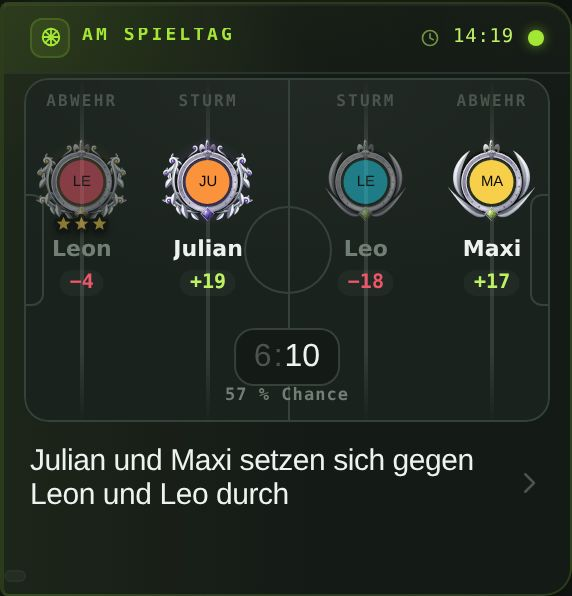
- Die häufigste Karte des Feeds. Statt Ergebnisband und Elo-Waage steht die Partie auf dem Tisch: Abwehr, Sturm, Sturm, Abwehr — in der Reihenfolge der Stangen.
- Neu ist die Rolle: wer hinten und wer vorne stand, zeigte bisher keine Karte. Unter jedem Wappen die Elo dieser Partie, in der Mitte Stand und Siegchance.
- Die Sieger hell, die Verlierer leiser — wie im Band, nur dass man jetzt sieht, gegen wen jemand direkt gespielt hat.
Der Ein-Tor-Krimi Die Anzeigetafel
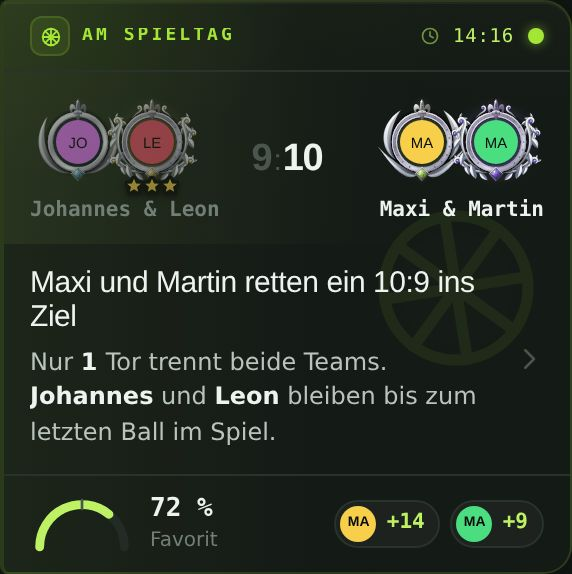
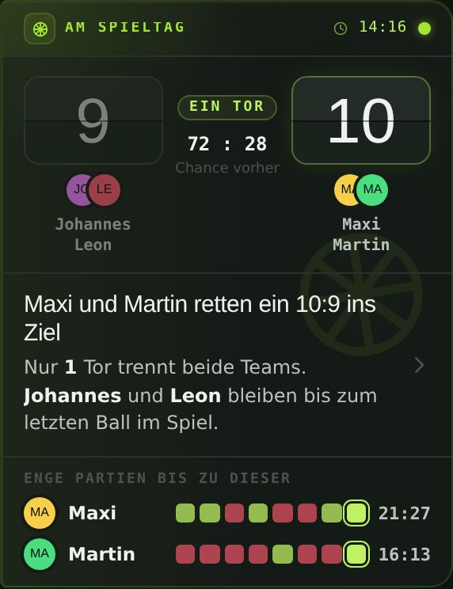
- Der Kopf wird zur Anzeigetafel mit Klappziffern, die Mitte sagt „EIN TOR" und wie die Chancen vorher standen.
- Darunter, was nur hier interessiert: wie die Sieger in engen Partien dastehen — die letzten acht als Zellen, diese markiert, dahinter die Bilanz aller.
Der klare Sieg Das Band und die Verteilung
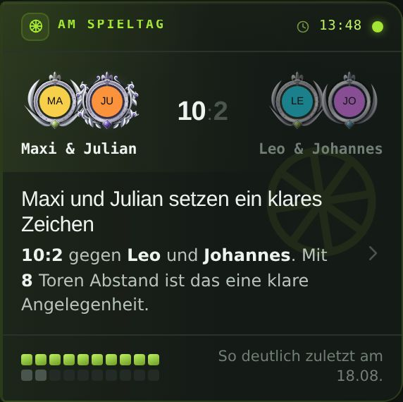
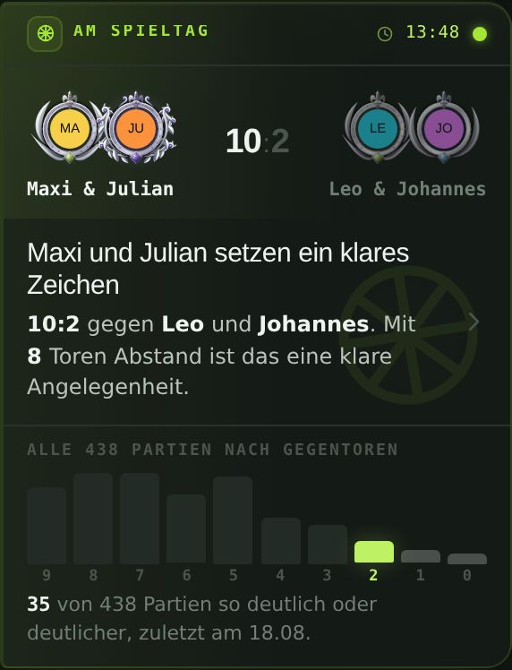
- „So deutlich zuletzt am …" sagte, wann. Die Säulen sagen, wie selten: jedes Ergebnis von 10:9 bis 10:0, gezählt über die ganze Liga bis zu dieser Partie.
- Dieses Ergebnis grün, die noch deutlicheren dahinter heller — darunter die Zahl in einem Satz.
Der Außenseitersieg Die Wippe
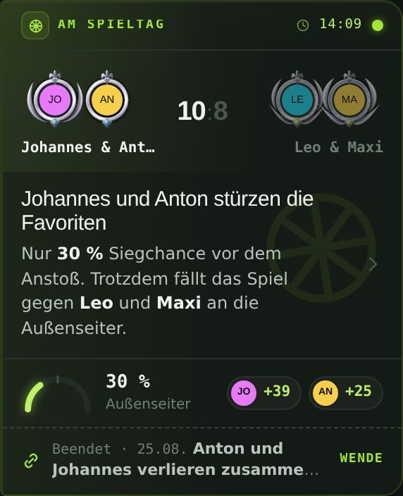
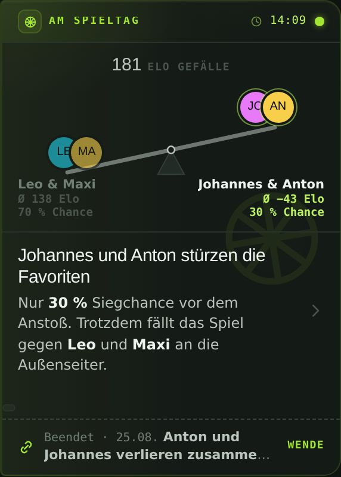
- Das Gewicht ist die Elo vor dem Anstoß: der Favorit sitzt unten, wie die Rechnung es erwartet hat, und gewonnen hat die leichte Seite.
- Die Neigung folgt dem Elo-Gefälle, die Zahl steht darüber; Siegchance und Elo-Schnitt beider Teams stehen an ihren Enden. Bogen und Chips entfallen.
Rangsprung und Spitzenwechsel Die Tabelle vorher und nachher
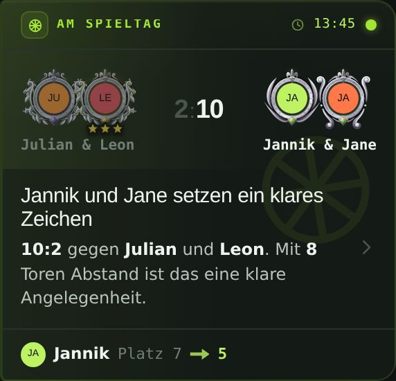
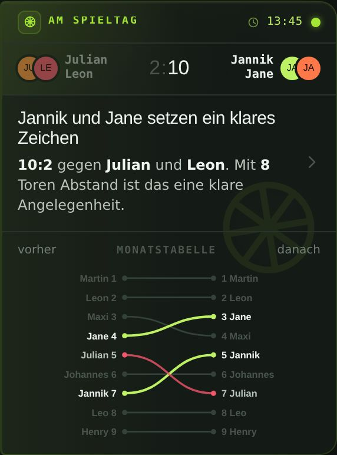
- Eine Linie je Spieler vom Platz vor der Partie zum Platz danach: wer durch diese Partie steigt, grün, wer dadurch fällt, rot, alle übrigen Metall [§C25].
- Man sieht nicht nur „Platz 7 → 5", sondern an wem jemand vorbeigezogen ist. Der Kopf schrumpft auf die Ergebniszeile, die Grafik bekommt den Platz.
- Beim Spitzenwechsel dasselbe Bauteil, und die neue Spitze trägt Gold — die Tabellenführung ist ein Titel auf Zeit. Im Fenster dieser Aufnahmen wechselte die Spitze nicht, deshalb ohne eigenes Bild.
Die Serie Der Lauf gegen den eigenen Bestwert
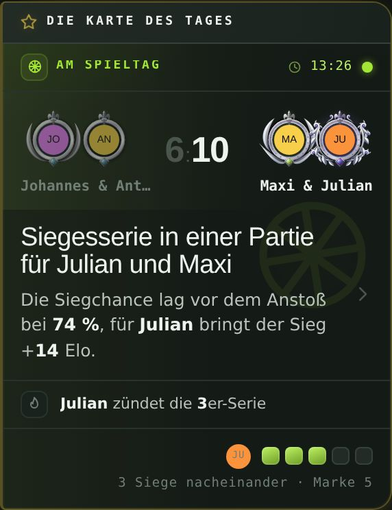
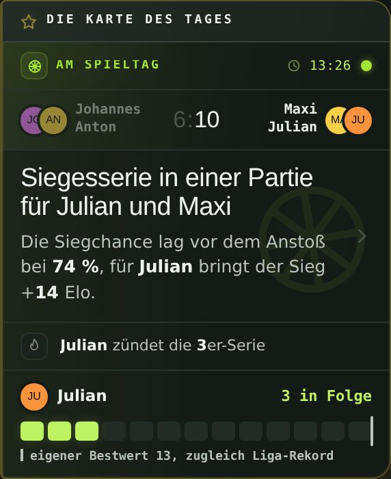
- Der Lauf misst sich am eigenen Bestwert und am Rekord der Liga, beide als Marke über der Reihe. Drei Siege in Folge sind für den einen Alltag und für den anderen die beste Zeit seiner Laufbahn.
- Die nächste runde Marke steht weiter im Blatt.
Die Wende Die Elo-Kurve
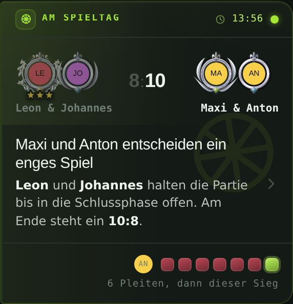
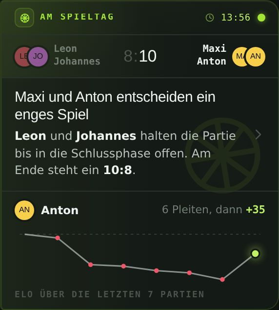
- Die letzten zwölf Partien des Siegers als Linie aus der Elo jeder Partie: die Pleiten davor als rote Punkte, dieser Sieg groß und grün.
- Man sieht, wie tief es vorher ging und wie viel der eine Sieg zurückholt.
Die Rivalitätsmarke Jede Begegnung
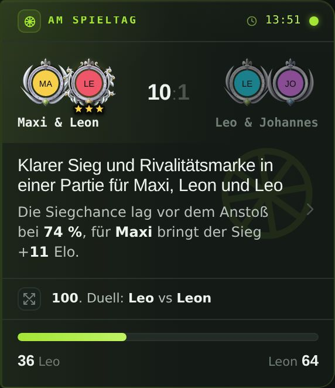
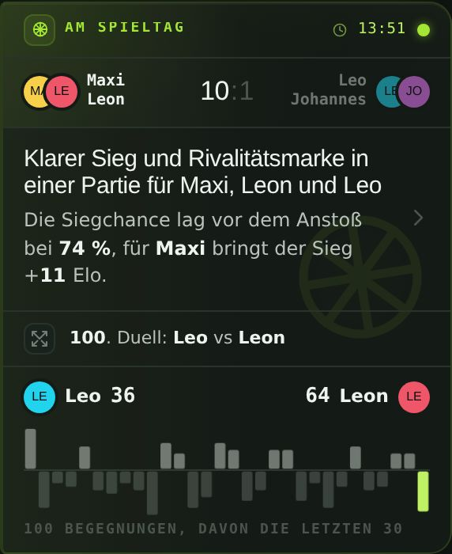
- Jede Partie der beiden gegeneinander als Balken: nach oben für den einen, nach unten für den anderen, so hoch, wie deutlich es ausging; diese grün.
- Serien und Wenden der Rivalität stehen da, ohne dass man eine Zahl liest.
Mit Grenzwerten
Was in einigen Jahren dasteht 0 Überlappungen
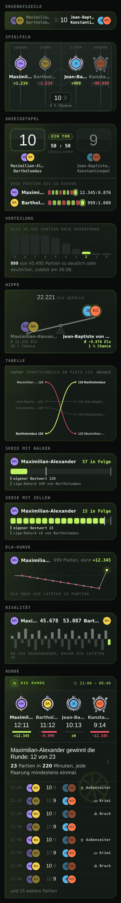
- Jedes Bauteil hat zwei Hälften: eine rechnet aus den Partien, die andere zeichnet nur, was sie bekommt. Deshalb lässt sich jedes Bild auch mit Zahlen zeichnen, die die Liga heute noch nicht hat.
- Links steht jedes Bauteil mit Grenzwerten: 45.495 Partien, eine Bilanz von 12.345:9.876, 98.765 Begegnungen, eine Elo von −12.345, eine Serie von 57 gegen einen Bestwert von 120 und einen Liga-Rekord von 340, eine Runde aus 23 Partien, Platz 118 bis 126 der Tabelle — und Namen wie „Jean-Baptiste von Hohenstein".
- Was wächst, hat einen Deckel und sagt, was dahinter liegt: die Serie wird über sechzehn ein Balken statt Zellen, die Rivalität zeigt die letzten dreißig Begegnungen, die Runde acht Partien und „und 15 weitere", die Tabelle neun Plätze um die Bewegung.
- Ein Name steht in einer eigenen Zeile und endet mit „…", eine Zahl ab 1.000 trägt den Tausenderpunkt, und eine Zahl in einer festen Zelle wird kleiner statt breiter.
- Gemessen im Browser: 38 Karten des Feeds und 11 Proben, jeder Text gegen jeden Text und jedes Gesicht, jeder Text gegen den Rand der Karte und gegen ein Abschneiden ohne „…" — 0 Befunde.
Beim Einbau zu klären:
- Die Runde ändert, was eine Karte ist: bisher hat jede Partie ihre eigene [§C33]. Sie bliebe es im Bestand und im Blatt; zusammengeführt würde nur in der Anzeige, wie bei der Sammelkarte.
- Spielfeld und Wippe zeigen Siegchance und Elo im Kopf — der Satz darunter streicht sie dann wie heute bei Bogen und Chips (_newsSpielSatz).
- Alle Grafiken rechnen aus den Partien bis zu ihrer eigenen, nicht bis heute — eine Karte von vorletzter Woche erzählt vom Stand von damals.